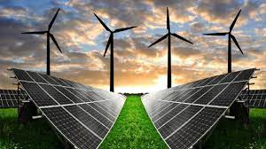

En España, el uso de energías no renovables ha mostrado una tendencia a la disminución en los últimos años, aunque siguen siendo una parte significativa del mix energético. La dependencia de combustibles fósiles como el petróleo, el gas natural y el carbón ha ido reduciéndose gradualmente, dando paso a un aumento en la participación de las energías renovables.
En España, las energías renovables más destacadas son la eólica, la solar (fotovoltaica y termoeléctrica) y la hidráulica. La energía eólica lidera la producción, seguida de cerca por la solar, mientras que la hidráulica también juega un papel importante.
–
–
–
–
En Europa, la energía hidroeléctrica, eólica y solar son las fuentes renovables más utilizadas. Alemania y España lideran la capacidad instalada de energías renovables, especialmente en energía solar.
En Europa, la proporción de energías renovables varía significativamente entre países, con Dinamarca liderando en energía eólica y países nórdicos como Suecia y Noruega destacando en el uso general de renovables. España, por su parte, ha aumentado su capacidad renovable, especialmente en energía solar y eólica, situándose como un actor relevante en la transición energética.